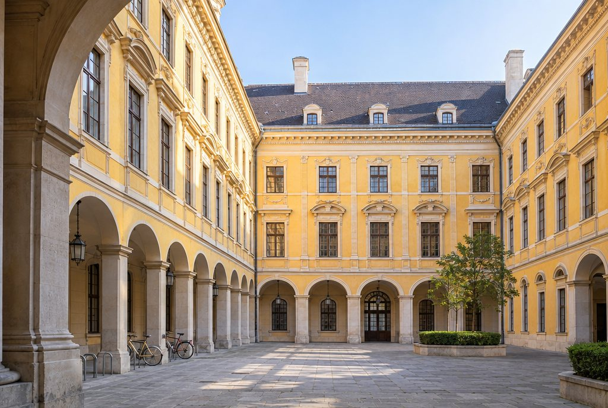

Hauptsitz
Amtsgebäude Wien
Ausnahmegasse 7, 1010 Wien
Telefon +43 1 4711-0
Sitz der Amtsleitung, der Stabsstellen sowie der Sektionen I, II und IV. Ringstraßenbau von 1881 in Schönbrunner Gelb, mit Prunkstiege und hauseigenem Kaffeeautomaten von 1974.